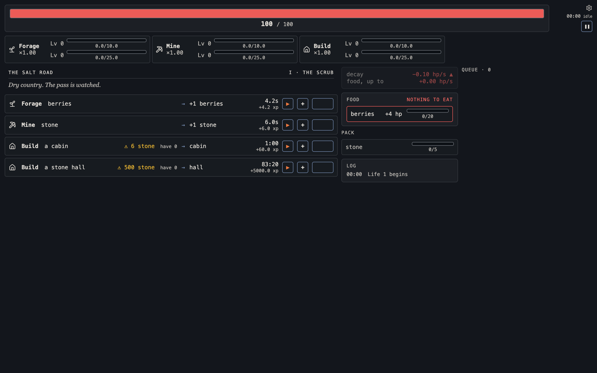
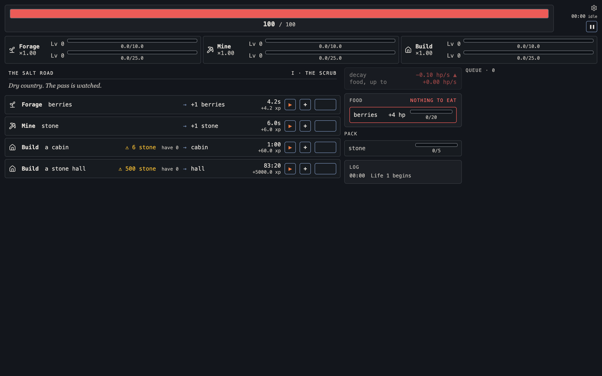

The skills band at a three-skill roster
Captured from the live game at 1280px on 2026-09-23. The twelve-cell band was cut to The Salt Road's roster (forage, mine, build) in the page; nothing here is drawn.


Captured from the live game at 1280px on 2026-09-23. The twelve-cell band was cut to The Salt Road's roster (forage, mine, build) in the page; nothing here is drawn.

